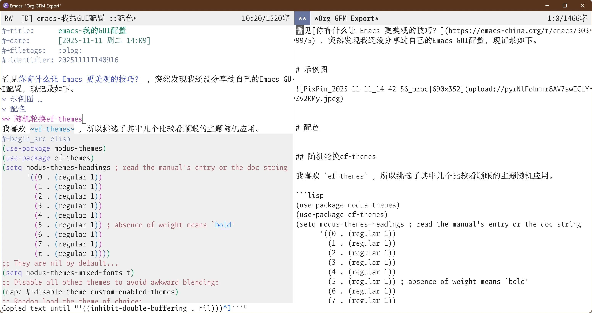

emacs-我的GUI配置
看见你有什么让 Emacs 更美观的技巧？ ，突然发现我还没分享过自己的Emacs GUI配置，现记录如下。
1. 示例图

2. 配色
2.1. 随机轮换ef-themes
我喜欢 ef-themes ，所以挑选了其中几个比较看顺眼的主题随机应用。
2.2. 代码块颜色一体化
默认的代码块内部颜色不会变，这里调整为整体深色
(setq org-fontify-quote-and-verse-blocks t)
(set-face-attribute 'org-code nil :background
(face-attribute 'org-block :background))
2.3. 设置org-todo-keywords颜色
MacOS上可以在指定bold时自动选择更粗字体，但Windows上需要手动选用粗一点的字体，然后再加粗。
;; 设置org-TODO-keywords颜色
(if (eq system-type 'darwin)
(setq org-todo-keyword-faces `(("TODO" . (:foreground ,(modus-themes-with-colors red-warmer) :weight bold))
("HOLD" . (:foreground ,(modus-themes-with-colors yellow-warmer) :weight bold ))
("XXXX" . (:foreground ,(modus-themes-with-colors magenta-warmer) :weight bold ))
("DONE" . (:foreground ,(modus-themes-with-colors green-warmer) :weight bold ))))
(setq org-todo-keyword-faces `(("TODO" . (:foreground ,(modus-themes-with-colors red-warmer) :family "LXGW Bright Code GB regular" :weight bold))
("HOLD" . (:foreground ,(modus-themes-with-colors yellow-warmer) :family "LXGW Bright Code GB regular" :weight bold))
("XXXX" . (:foreground ,(modus-themes-with-colors magenta-warmer) :family "LXGW Bright Code GB regular" :weight bold))
("DONE" . (:foreground ,(modus-themes-with-colors green-warmer) :family "LXGW Bright Code GB regular" :weight bold)))))
3. modeline
我用 nano-modeline ，简约实用。同时进行了一些modeline展示项的自定义化
(use-package nano-modeline
:demand t
:config
(setq-default mode-line-format nil)
(add-hook 'prog-mode-hook #'nano-modeline-prog-mode)
(add-hook 'text-mode-hook #'nano-modeline-text-mode)
(add-hook 'org-mode-hook #'nano-modeline-org-mode)
(add-hook 'elfeed-show-mode-hook #'nano-modeline-elfeed-entry-mode)
(add-hook 'elfeed-search-mode-hook #'nano-modeline-elfeed-search-mode)
(add-hook 'term-mode-hook #'nano-modeline-term-mode)
(add-hook 'messages-buffer-mode-hook #'nano-modeline-message-mode)
(add-hook 'org-capture-mode-hook #'nano-modeline-org-capture-mode)
(add-hook 'org-agenda-mode-hook #'nano-modeline-org-agenda-mode)
(nano-modeline-text-mode t)
(setq nano-modeline-window-dedicated-symbol '("● " . "")))
3.1. 覆盖Git图标
Windows上的nerd-icon有时会有问题，这里用纯文本代替
(defun nano-modeline-git-info (&optional symbol)
"Git information as (branch, file status)"
(when vc-mode
(when-let* ((file (buffer-file-name))
(branch (substring-no-properties vc-mode 5))
(state (vc-state file)))
(propertize (format "(%s %s, %s)" (or symbol "Git") branch state)
'face (nano-modeline-face 'primary)))))
3.2. 添加org文件中的路径显示
下面的函数为 nano-modeline 添加了 org-mode 中的路径显示功能
(defun my/nano-modeline-path-info ()
"Current cursor path info as 'outline1 > outline2' "
(when (eq major-mode 'org-mode)
(propertize (format-mode-line '((:eval (format "::%s" (mapconcat (lambda (x) (let ((y (string-trim-left x "COMMENT ")))
(truncate-string-to-width y 22)))
(org-ql--outline-path)
"▹")))))
'face (nano-modeline-face 'secondary ))))
(defun adv/nano-modeline-org-mode ()
"Nano line for org mode"
(funcall nano-modeline-position
'((nano-modeline-buffer-status) " "
(nano-modeline-org-buffer-name) " "
(my/nano-modeline-path-info))
'((nano-modeline-cursor-position)
(nano-modeline-window-dedicated))))
(advice-add #'nano-modeline-org-mode :override #'adv/nano-modeline-org-mode)
3.3. 添加buffer字数统计
下面的函数为 nano-modeline 添加了字数统计功能，用到的统计库在这里：https://github.com/LdBeth/advance-words-count.el
;;定义buffer-words变量
(defvar my/buffer-words 0
"The number of characters in the current buffer.")
;;变成buffer-local变量，确保另一个buffer的modeline不会受到影响
(make-variable-buffer-local 'my/buffer-words)
;; 引用第三方统计库
(use-package advance-words-count
:load-path "~/.emacs.d/elpa/")
;; 下面函数统计并更新当前buffer字数
(defun my/buffer-words-count ()
"Return the number of characters in the current buffer."
(unless (> my/buffer-words 50000)
(setq my/buffer-words
(if (use-region-p)
(+ (words-count (region-beginning) (region-end) words-count-rule-CJK)
(words-count (region-beginning) (region-end) words-count-rule-ansci))
(+ (words-count (point-min) (point-max) words-count-rule-CJK)
(words-count (point-min) (point-max) words-count-rule-ansci))))
(force-mode-line-update)))
;;窗口切换后更新字数
(add-hook 'window-configuration-change-hook #'my/buffer-words-count)
;; buffer调整后更新字数
(add-hook 'buffer-list-update-hook #'my/buffer-words-count)
;; 空闲时（针对scratch）更新字数
(run-with-idle-timer 2 t #'my/buffer-words-count)
;; 自定义nano-modeline的内容
(defun adv/nano-modeline-cursor-position (&optional format)
"Cursor position using given FORMAT."
(let ((format (or format "%l:%c ")))
(propertize (format-mode-line '(
"%l:%c/"
(:eval (format "%s字" my/buffer-words)) " "))
'face (nano-modeline-face 'secondary ))
))
(advice-add #'nano-modeline-cursor-position :override #'adv/nano-modeline-cursor-position)
(defun adv/nano-modeline-org-agenda-date (&optional format)
"Date at point in org agenda using given FORMAT"
(when-let* ((day (or (org-get-at-bol 'ts-date)
(org-get-at-bol 'day)))
(date (calendar-gregorian-from-absolute day))
(day (nth 1 date))
(month (nth 0 date))
(year (nth 2 date))
(date (encode-time 0 0 0 day month year)))
(propertize (format-time-string (or format "%A %-e %B %Y ") date)
'face (nano-modeline-face 'secondary))))
(advice-add #'nano-modeline-org-agenda-date :override #'adv/nano-modeline-org-agenda-date)
4. 字体配置
4.1. 自定义设置字体函数
在这里定义 set-font 函数，接受 英文字体名、中文字体名、英文尺寸、中文尺寸 四个参数
(defun set-font (english chinese english-size chinese-size)
(set-face-attribute 'default nil :font
(format "%s:pixelsize=%d" english english-size))
(set-face-attribute 'fixed-pitch nil :font
(format "%s:pixelsize=%d" english english-size))
(set-face-attribute 'variable-pitch nil :font
(format "%s:pixelsize=%d" english english-size))
(dolist (charset '(kana han cjk-misc bopomofo))
(set-fontset-font (frame-parameter nil 'font) charset
(font-spec :family chinese :size chinese-size))))
4.2. GUI及不同设备单独函数
my/set-gui 函数根据设备类型和名称进行不同的设置。相关字体链接：
- LXGW Bright Code GB
- FangSongCode
- Twitter Color Emoji
- Cascadia Mono NF SemiLight
- Symbols Nerd Font Mono
(defun my/set-gui ()
(interactive)
(if (eq system-type 'darwin)
(progn
;; 与Win不同，Mac需要在函数中指定light字体
(defun set-font (english chinese english-size chinese-size)
(set-face-attribute 'default nil :font
(font-spec :family english :size english-size :weight 'light))
(set-face-attribute 'fixed-pitch nil :font
(font-spec :family english :size english-size :weight 'light))
(set-face-attribute 'variable-pitch nil :font
(format "%s:pixelsize=%d" english english-size))
(dolist (charset '(kana han cjk-misc bopomofo))
(set-fontset-font (frame-parameter nil 'font) charset
(font-spec :family chinese :size chinese-size))))
(set-font "LXGW Bright Code GB" "FangSongCode" 22 22)
(set-fontset-font t 'emoji (font-spec :family "Twitter Color Emoji") nil 'prepend)
(set-fontset-font t 'symbol (font-spec :family "Cascadia Mono NF SemiLight") nil 'prepend)
(set-frame-parameter (selected-frame) 'fullscreen 'maximized))
;;我只在MacOS和Windows上用Emacs，所以非Mac即Win
(progn
(set-font "LXGW Bright Code GB light" "FangSongCode" 42 42)
(set-fontset-font t 'emoji (font-spec :family "Segoe UI Emoji") nil 'prepend)
(set-fontset-font t 'symbol (font-spec :family "Symbols Nerd Font Mono") nil 'prepend)
(let* ((display-width (display-pixel-width))
(display-height (display-pixel-height))
(frame-width (floor (* 0.8 display-width)))
(frame-height (floor (* 0.73 display-height)))
(left-offset (floor (* 0.1 display-width)))
(top-offset (floor (* 0.1 display-height))))
(set-frame-position (selected-frame) left-offset top-offset)
(set-frame-size (selected-frame) frame-width frame-height t))))
(sis-set-english)
(select-frame-set-input-focus (selected-frame)))
(my/set-gui)
;; server模式下需要启用以下hook
(add-hook 'server-after-make-frame-hook #'my/set-gui)
4.3. nerd-icons
美化图标设置
(use-package nerd-icons)
(use-package nerd-icons-ibuffer
:ensure t
:hook (ibuffer-mode-hook . nerd-icons-ibuffer-mode))
(use-package nerd-icons-dired
:ensure t
:hook
(dired-mode-hook . nerd-icons-dired-mode))
(use-package nerd-icons-corfu
:ensure t
:after corfu
:config
(add-to-list 'corfu-margin-formatters #'nerd-icons-corfu-formatter))
(use-package nerd-icons-completion
:ensure t
:config
(nerd-icons-completion-mode))
5. 杂项微调
5.1. 关闭滚动条
(scroll-bar-mode -1)
5.2. 关闭鼠标缩放手势
(define-key global-map (kbd "C-<wheel-up>") nil)
(define-key global-map (kbd "C-<wheel-down>") nil)
5.3. 选定区域高亮
以便选中的区域会高亮显示
(transient-mark-mode 1)
5.4. 关闭工具栏
(tool-bar-mode 0)
5.5. 自定义标题栏内容
将窗口标题栏的内容设置为 Emacs: + (buffer-name)
;; (autoload 'ibuffer "ibuffer" "List buffers." t)
(setq frame-title-format "Emacs: %b")
5.6. 鼠标滚轮设置
设置鼠标滚轮的滚动量、滚动速度和滚动点
(setq mouse-wheel-scroll-amount '(2 ((shift) . 1)) ;; one line at a time
mouse-wheel-progressive-speed nil ;; don't accelerate scrolling
mouse-wheel-follow-mouse 't ;; scroll window under mouse
)
5.7. 减少闪烁
根据相关新闻：git@github.com:emacs-mirror/emacs/blob/c77ef7d193cfba2e06846012abeb684e37d228a9/etc/NEWS#L2234-L2247
Emacs now supports double-buffering on MS-Windows to reduce display flicker.
(This was supported on Free systems since Emacs 26.1.)
To disable double-buffering (e.g., if it causes display problems), set
the frame parameter 'inhibit-double-buffering' to a non-nil value.
You can do that either by adding
'(inhibit-double-buffering . t)
to 'default-frame-alist', or by modifying the frame parameters of the
selected frame by evaluating
(modify-frame-parameters nil '((inhibit-double-buffering . t)))
实际上应该保持 nil 。
(modify-frame-parameters nil '((inhibit-double-buffering . nil)))